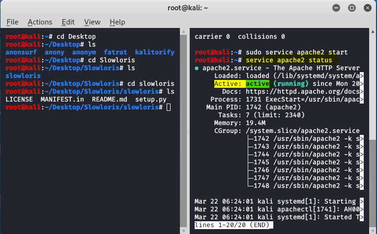
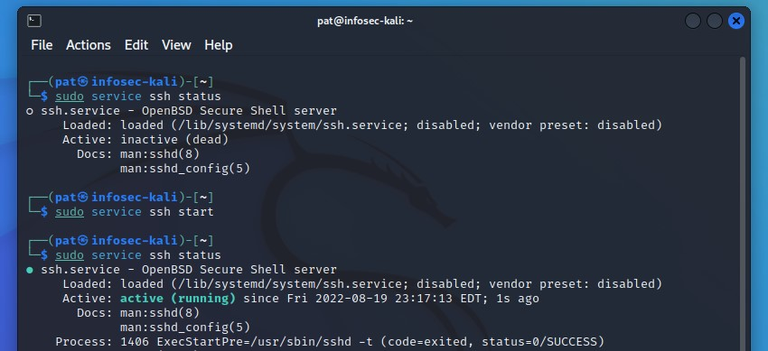

1. Contexte et objectif
L’objectif de cette partie était de comprendre la sécurité d’une infrastructure sous un angle plus opérationnel : mise en place d’environnement, analyse de comportements offensifs et réflexion sur la détection d’activités anormales.
2. Mon rôle dans la SAÉ
J’ai participé à la mise en place et à l’observation de l’environnement, à l’analyse de certaines faiblesses et à la compréhension des mécanismes permettant d’identifier une activité suspecte.
3. Compétences et apprentissages critiques mobilisés
- AC22.01 : déployer et caractériser des systèmes de transmission ou d’infrastructure ;
- AC22.05 : questionner un cahier des charges ou une situation technique.
Cette SAÉ est liée à la fois à la réflexion réseau et à la cybersécurité, car elle pousse à comprendre l’infrastructure dans sa globalité.
4. Tâches réalisées
- Mise en place d’un environnement de travail ou d’observation ;
- Utilisation d’outils orientés sécurité dans un cadre pédagogique ;
- Analyse de comportements ou de journaux ;
- Réflexion sur les mécanismes de défense à mettre en place.
5. Traces du projet

Capture de l’environnement utilisé (Kali Linux) lors de l’attaque sur Active Directory. Elle montre l’utilisation d’outils et de commandes pour analyser et exploiter une cible.

Cette capture montre l’activation et la vérification du service SSH sur un système Linux. Elle illustre ma capacité à gérer un service réseau et à permettre un accès distant sécurisé.
6. Analyse de ma progression
Cette SAÉ m’a fait progresser dans ma vision globale de la sécurité. J’ai compris que la cybersécurité ne se limite pas à un outil ou à une faille, mais repose aussi sur une bonne lecture de l’environnement technique.
7. Difficultés rencontrées
Certaines étapes ont été complexes, notamment lorsque je devais comprendre précisément pourquoi une faiblesse existait ou comment elle pouvait être observée. Cela demandait de la méthode et du recul.
8. Ce que j’ai mis en place pour les surmonter
J’ai pris le temps d’analyser l’environnement étape par étape et de relier chaque observation à son impact potentiel. Cette méthode m’a aidé à mieux comprendre les relations entre configuration, exposition et détection.
9. Autoévaluation
Cette SAÉ a renforcé mon intérêt pour la cybersécurité. Elle m’a montré que je prenais du plaisir à comprendre une infrastructure, à chercher ses faiblesses et à envisager des moyens de défense. Je dois encore gagner en précision technique, mais cette expérience confirme mon orientation.
10. Réinvestissement possible
Les acquis de cette SAÉ peuvent être réutilisés dans des projets de sécurisation d’infrastructure, d’analyse système ou de surveillance d’environnement réseau.